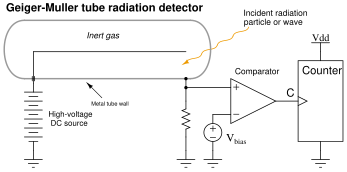

Certain types of nuclear radiation easily penetrates the walls of industrial vessels, but is attenuated by traveling through the bulk of material stored within those vessels. By placing a radioactive source on one side of the vessel and measuring the radiation reaching the other side of the vessel, an approximate indication of level within that vessel may be obtained. Other types of radiation are scattered by process material in vessels, which means the level of process material may be sensed by sending radiation into the vessel through one wall and measuring back-scattered radiation returning through the same wall.
The four most common forms of nuclear radiation are alpha particles ( ), beta particles (
), beta particles ( ), gamma rays (
), gamma rays ( ), and neutrons (
), and neutrons ( ). Alpha particles are helium nuclei (2 protons bound together with 2 neutrons) ejected at high velocity from the nuclei of certain decaying atoms. They are easy to detect, but have very little penetrating power and so are not used for industrial level measurement. Beta particles are electrons1.41 ejected at high velocity from the nuclei of certain decaying atoms. Like alpha particles, though, they have little penetrating power and so are not used for industrial level measurement. Gamma rays are electromagnetic in nature (like X-rays and light waves) and have great penetrating power. Neutron radiation also penetrates metal very effectively, but is attenuated and scattered by any substance containing hydrogen (e.g. water, hydrocarbons, and many other industrial fluids), which makes it almost ideal for detecting the presence of a great many process fluids. These latter two forms of radiation (gamma rays and neutrons) are the most common in industrial measurement, with gamma rays used in through-vessel applications and neutrons typically used in backscatter applications.
). Alpha particles are helium nuclei (2 protons bound together with 2 neutrons) ejected at high velocity from the nuclei of certain decaying atoms. They are easy to detect, but have very little penetrating power and so are not used for industrial level measurement. Beta particles are electrons1.41 ejected at high velocity from the nuclei of certain decaying atoms. Like alpha particles, though, they have little penetrating power and so are not used for industrial level measurement. Gamma rays are electromagnetic in nature (like X-rays and light waves) and have great penetrating power. Neutron radiation also penetrates metal very effectively, but is attenuated and scattered by any substance containing hydrogen (e.g. water, hydrocarbons, and many other industrial fluids), which makes it almost ideal for detecting the presence of a great many process fluids. These latter two forms of radiation (gamma rays and neutrons) are the most common in industrial measurement, with gamma rays used in through-vessel applications and neutrons typically used in backscatter applications.
Through-vessel and backscatter nuclear level instrument applications appear contrasted in these two illustrations:
Nuclear radiation sources consist of radioactive samples contained in a shielded box. The sample itself is a small piece of radioactive substance encased in a double-wall stainless steel cladding, typically resembling a medicinal pill in size and shape. The specific type and quantity of radioactive source material depends on the nature and intensity of radiation required for the application. The basic rule here is that less is better: the smallest source capable of performing the measurement task is the best one for the application.
Common source types for gamma-ray applications are Cesium-137 and Cobalt-60. The numbers represent the atomic mass of each isotope: the sum total of protons and neutrons in the nucleus of each atom. These isotopes' nuclei are unstable, decaying over time to become different elements (Barium-137 and Nickel-60, respectively). Cobalt-60 has a relatively short half-life1.42 of 5.3 years, whereas Cesium-137 has a much longer half-life of 30 years. This means radiation-based sensors using Cesium will be more stable over time (i.e. less calibration drift) than sensors using Cobalt. The trade-off is that Cobalt emits more powerful gamma rays than Cesium, which makes it better suited to applications where the radiation must penetrate thick process vessels or travel long distances (across wide process vessels).
One of the most effective methods of shielding against gamma ray radiation is with very dense substances such as lead or concrete. This is why the source boxes holding gamma-emitting radioactive pellets are lined with lead, so the radiation escapes only in the direction intended:

Radioactive sources naturally emit radiation, requiring no source of energy such as electricity to do their job. As such, they are “always-on” devices and may be locked out for testing and maintenance only by dropping a lead shutter over the “window” of the box. The lever actuating the shutter typically has provisions for lock-out/tag-out (LOTO) so a maintenance person may place a padlock on the lever and prevent anyone else from “turning on” the source during maintenance. For point-level (level switch) applications, the source shutter acts as a simple simulator for either a full vessel (in the case of a through-vessel installation) or an empty vessel (in the case of a backscatter installation). A full vessel may be simulated for neutron backscatter instruments by placing a sheet of plastic (or other hydrogen-rich substance) between the source box and the process vessel wall.
The detector for a radiation-based instrument is by far the most complex and expensive component of the system. Many different detector designs exist, the most common at the time of this writing being ionization chambers such as the Geiger-Muller (G-M) tube. In such devices, a thin metal wire centered in a metal cylinder sealed and filled with inert gas is energized with high voltage DC. Any ionizing radiation such as alpha, beta, or gamma radiation entering the tube causes gas molecules to ionize, allowing a pulse of electric current to travel between the wire and tube wall. A sensitive electronic circuit detects and counts these pulses, with a greater pulse rate corresponding to a greater intensity of detected radiation.

The following photograph shows an aluminum Geiger-Muller tube connected to a portable, battery-powered counter. This Geiger counter may be used as a piece of test equipment to measure radiation intensity while diagnosing problems in nuclear level measurement systems:
Geiger-style radiation detectors used as part of permanently-installed level measurement systems are housed in rugged housings, internally similar to the portable G-M tube shown in the photograph but designed for the rigors of continuous use in harsh industrial environments.
Neutron radiation is notoriously difficult to electronically detect, since neutrons are non-ionizing. Ionization tubes specifically made for neutron radiation detection are typically based on the Geiger-Muller design, but using tubes filled with special substances known to react with neutron radiation to produce (secondary) ionizing radiation. One example of such a detector is the so-called fission chamber, which is an ionization chamber lined with a fissile material such as uranium-235 (U). When a neutron enters the chamber and is captured by a fissile nucleus, that nucleus undergoes fission (splits into separate pieces) with a subsequent emission of gamma rays and charged particles, which are then detected by ionization in the chamber. Another variation on this theme is to fill an ionization tube with boron trifluoride gas. When a boron-10 ( B) nucleus captures a neutron, it transmutates into lithium-7 (Li) and ejects an alpha particle and several beta particles, both of which cause detectable ionization in the chamber.
B) nucleus captures a neutron, it transmutates into lithium-7 (Li) and ejects an alpha particle and several beta particles, both of which cause detectable ionization in the chamber.
The accuracy of radiation-based level instruments varies with the stability of process fluid density, vessel wall coating, source decay rates, and detector drift. The multitude of error variables in radiation-based level measurement is one reason why they are more typically found as point-level (i.e. level switch) devices rather than continuous level (i.e. transmitter) measurement applications.
With their generally poor accuracy and the additional need for NRC (Nuclear Regulatory Commission) licensing to operate such instruments at an industrial facility, radiation instruments are typically used where no other instrument is practical. Examples include the level measurement of highly corrosive or toxic process fluids where penetrations into the vessel must be minimized and where piping requirements make weight-based measurement impractical (e.g. hydrocarbon/acid separators in alkylation processes in the oil refining industry), as well as processes where the internal conditions of the vessel are too physically violent for any instrument to survive (e.g. delayed coking vessels in the oil refining industry, where the coke is “drilled” out of the vessel by a high-pressure water jet).

![$\displaystyle \includegraphics[width=4in]{level72.eps}$](img236.svg)